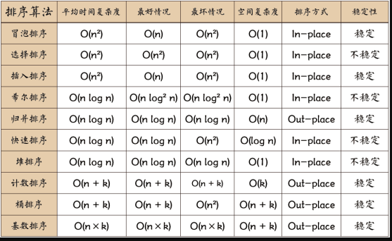

常见数组排序算法有哪些？
参考答案
如图所示：<br>

快速排序：
先从数列中取出一个数作为“基准”。
分区过程：将比这个“基准”大的数全放到“基准”的右边，小于或等于“基准”的数全放到“基准”的左边。<br>再对左右区间重复第二步，直到各区间只有一个数。
var quickSort = function(arr) {
if (arr.length <= 1) { return arr; }
var pivotIndex = Math.floor(arr.length / 2); //基准位置（理论上可任意选取）
var pivot = arr.splice(pivotIndex, 1)[0]; //基准数
var left = [];
var right = [];
for (var i = 0; i < arr.length; i++){
if (arr[i] < pivot) {
left.push(arr[i]);
} else {
right.push(arr[i]);
}
}
return quickSort(left).concat([pivot], quickSort(right)); //链接左数组、基准数构成的数组、右数组
};选择排序：
首先在未排序序列中找到最小（大）元素，存放到排序序列的起始位置 <br>再从剩余未排序元素中继续寻找最小（大）元素，然后放到已排序序列的末尾。 <br>重复第二步，直到所有元素均排序完毕。
function selectionSort(arr) {
var len = arr.length;
var minIndex, temp;
for (var i = 0; i < len - 1; i++) {
minIndex = i;
for (var j = i + 1; j < len; j++) {
if (arr[j] < arr[minIndex]) { // 寻找最小的数
minIndex = j; // 将最小数的索引保存
}
}
temp = arr[i];
arr[i] = arr[minIndex];
arr[minIndex] = temp;
}
return arr;
}插入排序：
将第一待排序序列第一个元素看做一个有序序列，把第二个元素到最后一个元素当成是未排序序列。 <br>从头到尾依次扫描未排序序列，将扫描到的每个元素插入有序序列的适当位置。（如果待插入的元素与有序序列中的某个元素相等，则将待插入元素插入到相等元素的后面。）
function insertionSort(arr) {
var len = arr.length;
var preIndex, current;
for (var i = 1; i < len; i++) {
preIndex = i - 1;
current = arr[i];
while(preIndex >= 0 && arr[preIndex] > current) {
arr[preIndex+1] = arr[preIndex];
preIndex--;
}
arr[preIndex+1] = current;
}
return arr;
}冒泡法排序：
比较相邻的元素。如果第一个比第二个大，就交换他们两个。 <br>对每一对相邻元素作同样的工作，从开始第一对到结尾的最后一对。这步做完后，最后的元素会是最大的数。 <br>针对所有的元素重复以上的步骤，除了最后一个。 <br>持续每次对越来越少的元素重复上面的步骤，直到没有任何一对数字需要比较。
function bubbleSort(arr) {
var len = arr.length;
for (var i = 0; i < len - 1; i++) {
for (var j = 0; j < len - 1 - i; j++) {
if (arr[j] > arr[j+1]) { // 相邻元素两两对比
var temp = arr[j+1]; // 元素交换
arr[j+1] = arr[j];
arr[j] = temp;
}
}
}
return arr;
}希尔排序
1959年Shell发明，第一个突破O(n2)的排序算法，是简单插入排序的改进版。<br>它与插入排序的不同之处在于，它会优先比较距离较远的元素。希尔排序又叫缩小增量排序。
先将整个待排序的记录序列分割成为若干子序列分别进行直接插入排序，具体算法描述： <br>选择一个增量序列t1，t2，…，tk，其中ti>tj，tk=1； <br>按增量序列个数k，对序列进行k 趟排序； <br>每趟排序，根据对应的增量ti，将待排序列分割成若干长度为m 的子序列，分别对各子表进行直接插入排序。<br>仅增量因子为1 时，整个序列作为一个表来处理，表长度即为整个序列的长度。
function shellSort(arr) {
var len = arr.length,
temp,
gap = 1;
while (gap < len / 3) { // 动态定义间隔序列
gap = gap * 3 + 1;
}
for (gap; gap > 0; gap = Math.floor(gap / 3)) {
for (var i = gap; i < len; i++) {
temp = arr[i];
for (var j = i-gap; j > 0 && arr[j]> temp; j-=gap) {
arr[j + gap] = arr[j];
}
arr[j + gap] = temp;
}
}
return arr;
}归并排序
直接上代码了
function mergeSort(arr){
var len = arr.length;
if(len <2)
return arr;
var mid = Math.floor(len/2),
left = arr.slice(0,mid),
right =arr.slice(mid);
//send left and right to the mergeSort to broke it down into pieces
//then merge those
return merge(mergeSort(left),mergeSort(right));
}
function merge(left, right){
var result = [],
lLen = left.length,
rLen = right.length,
l = 0,
r = 0;
while(l < lLen && r < rLen){
if(left[l] < right[r]){
result.push(left[l++]);
}
else{
result.push(right[r++]);
}
}
//remaining part needs to be addred to the result
return result.concat(left.slice(l)).concat(right.slice(r));
}1. 冒泡排序 (Bubble Sort)
- 原理：通过重复遍历数组，每次比较相邻的元素，并交换它们的位置。每次遍历都会将最大的元素移动到数组的末尾。
- 时间复杂度：最坏情况和平均情况均为 O(n^2)，最佳情况为 O(n)（当数组已经有序时）。
- 优点：实现简单，适合教学和理解排序概念。
- 缺点：效率低，不适合处理大数据量的排序。
2. 选择排序 (Selection Sort)
- 原理：每次从未排序的部分中选择最小（或最大）的元素，将其放到已排序部分的末尾。
- 时间复杂度：最坏情况、最佳情况和平均情况均为 O(n^2)。
- 优点：实现简单，不需要额外的存储空间。
- 缺点：效率低，特别是在处理大量数据时。
3. 插入排序 (Insertion Sort)
- 原理：将数组分为已排序部分和未排序部分，每次从未排序部分中取一个元素，插入到已排序部分的正确位置。
- 时间复杂度：最坏情况和平均情况均为 O(n^2)，最佳情况为 O(n)（当数组已经有序时）。
- 优点：简单且对小数据量和几乎已排序的数组非常高效。
- 缺点：效率低，对大数据量排序时不够高效。
4. 快速排序 (Quick Sort)
- 原理：选择一个“基准”元素，将数组分为两个部分，小于基准的元素放在基准左边，大于基准的元素放在基准右边，然后递归地对这两个部分进行排序。
- 时间复杂度：平均情况为 O(n log n)，最坏情况为 O(n^2)（当数组已经有序时，或基准选择不当）。
- 优点：平均情况下性能优秀，是实用的排序算法之一。
- 缺点：最坏情况下效率低，对栈空间的要求较高。
5. 归并排序 (Merge Sort)
- 原理：将数组分成两半，递归地对两半进行排序，然后将两个已排序的半部分合并成一个排序的数组。
- 时间复杂度：最坏情况、最佳情况和平均情况均为 O(n log n)。
- 优点：稳定且高效，对大数据量排序特别适合。
- 缺点：需要额外的存储空间。
6. 堆排序 (Heap Sort)
- 原理：将数组视为一棵完全二叉树，构建最大堆（或最小堆），将堆顶元素（最大或最小）移到数组末尾，然后重新调整堆，重复这个过程。
- 时间复杂度：最坏情况、最佳情况和平均情况均为 O(n log n)。
- 优点：无需额外的存储空间，不依赖于递归。
- 缺点：实现较复杂。
7. 桶排序 (Bucket Sort)
- 原理：将数组分到多个桶中，每个桶内排序后，再合并各个桶中的元素。
- 时间复杂度：最坏情况和平均情况均为 O(n^2)，最佳情况为 O(n)（当桶内排序很快时）。
- 优点：适用于特定类型的数据（如范围有限的整数）。
- 缺点：对数据分布有要求，需要额外的空间。